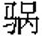

因为翻衣箱，翻出几面古铜镜子来，大概是民国初年初到北京时候买在那里的，“情随事迁”，全然忘却，宛如见了隔世的东西了。
一面圆径不过二寸，很厚重，背面满刻蒲陶[556]，还有跳跃的鼯鼠，沿边是一圈小飞禽。古董店家都称为“海马葡萄镜”。但我的一面并无海马，其实和名称不相当。记得曾见过别一面，是有海马的，但贵极，没有买。这些都是汉代的镜子；后来也有模造或翻沙者，花纹可造粗拙得多了。汉武通大宛安息，以致天马蒲萄，[557]大概当时是视为盛事的，所以便取作什器的装饰。古时，于外来物品，每加海字，如海榴，海红花，海棠之类。海即现在之所谓洋，海马译成今文，当然就是洋马。镜鼻是一个虾蟆，则因为镜如满月，月中有蟾蜍[558]之故，和汉事不相干了。
遥想汉人多少闳放，新来的动植物，即毫不拘忌，来充装饰的花纹。唐人也还不算弱，例如汉人的墓前石兽，多是羊，虎，天禄，辟邪[559]，而长安的昭陵上，却刻着带箭的骏马[560]，还有一匹驼鸟，则办法简直前无古人。现今在坟墓上不待言，即平常的绘画，可有人敢用一朵洋花一只洋鸟，即私人的印章，可有人肯用一个草书一个俗字么？许多雅人，连记年月也必是甲子，怕用民国纪元。不知道是没有如此大胆的艺术家；还是虽有而民众都加迫害，他于是乎只得萎缩，死掉了？
宋的文艺，现在似的国粹气味就熏人。然而辽金元陆续进来了，这消息很耐寻味。汉唐虽然也有边患，但魄力究竟雄大，人民具有不至于为异族奴隶的自信心，或者竟毫未想到，凡取用外来事物的时候，就如将彼俘来一样，自由驱使，绝不介怀。一到衰弊陵夷之际，神经可就衰弱过敏了，每遇外国东西，便觉得仿佛彼来俘我一样，推拒，惶恐，退缩，逃避，抖成一团，又必想一篇道理来掩饰，而国粹遂成为孱王和孱奴的宝贝。
无论从那里来的，只要是食物，壮健者大抵就无需思索，承认是吃的东西。惟有衰病的，却总常想到害胃，伤身，特有许多禁条，许多避忌；还有一大套比较利害而终于不得要领的理由，例如吃固无妨，而不吃尤稳，食之或当有益，然究以不吃为宜云云之类。但这一类人物总要日见其衰弱的，因为他终日战战兢兢，自己先已失了活气了。
不知道南宋比现今如何，但对外敌，却明明已经称臣，惟独在国内特多繁文缛节以及唠叨的碎话。正如倒霉人物，偏多忌讳一般，豁达闳大之风消歇净尽了。直到后来，都没有什么大变化。我曾在古物陈列所所陈列的古画上看见一颗印文，是几个罗马字母。但那是所谓“我圣祖仁皇帝”[561]的印，是征服了汉族的主人，所以他敢；汉族的奴才是不敢的。便是现在，便是艺术家，可有敢用洋文的印的么？
清顺治中，时宪书[562]上印有“依西洋新法”五个字，痛哭流涕来劾洋人汤若望的偏是汉人杨光先[563]。直到康熙初，争胜了，就教他做钦天监正去，则又叩阍以“但知推步之理不知推步之数”辞。不准辞，则又痛哭流涕地来做《不得已》，说道“宁可使中夏无好历法，不可使中夏有西洋人。”然而终于连闰月都算错了，他大约以为好历法专属于西洋人，中夏人自己是学不得，也学不好的。但他竟论了大辟，可是没有杀，放归，死于途中了。汤若望入中国还在明崇祯初，其法终未见用；后来阮元[564]论之曰：“明季君臣以大统寖疏，开局修正，既知新法之密，而讫未施行。圣朝定鼎，以其法造时宪书，颁行天下。彼十余年辩论翻译之劳，若以备我朝之采用者，斯亦奇矣！……我国家圣圣相传，用人行政，惟求其是，而不先设成心。即是一端，可以仰见如天之度量矣！”（《畴人传》四十五）
现在流传的古镜们，出自冢中者居多，原是殉葬品。但我也有一面日用镜，薄而且大，规抚汉制，也许是唐代的东西。那证据是：一，镜鼻已多磨损；二，镜面的沙眼都用别的铜来补好了。当时在妆阁中，曾照唐人的额黄和眉绿[565]，现在却监禁在我的衣箱里，它或者大有今昔之感罢。
但铜镜的供用，大约道光咸丰时候还与玻璃镜并行；至于穷乡僻壤，也许至今还用着。我们那里，则除了婚丧仪式之外，全被玻璃镜驱逐了。然而也还有余烈可寻，倘街头遇见一位老翁，肩了长凳似的东西，上面缚着一块猪肝色石和一块青色石，试伫听他的叫喊，就是“磨镜，磨剪刀！”
宋镜我没有见过好的，什九并无藻饰，只有店号或“正其衣冠”等类的迂铭词，真是“世风日下”。但是要进步或不退步，总须时时自出新裁，至少也必取材异域，倘若各种顾忌，各种小心，各种唠叨，这么做即违了祖宗，那么做又像了夷狄，终生惴惴如在薄冰上，发抖尚且来不及，怎么会做出好东西来。所以事实上“今不如古”者，正因为有许多唠叨着“今不如古”的诸位先生们之故。现在情形还如此。倘再不放开度量，大胆地，无畏地，将新文化尽量地吸收，则杨光先似的向西洋主人沥陈中夏的精神文明的时候，大概是不劳久待的罢。
但我向来没有遇见过一个排斥玻璃镜子的人。单知道咸丰年间，汪曰桢[566]先生却在他的大著《湖雅》里攻击过的。他加以比较研究之后，终于决定还是铜镜好。最不可解的是：他说，照起面貌来，玻璃镜不如铜镜之准确。莫非那时的玻璃镜当真坏到如此，还是因为他老先生又带上了国粹眼镜之故呢？我没有见过古玻璃镜。这一点终于猜不透。
一九二五年二月九日。
注 释
[555] 本篇最初发表于1925年3月2日《语丝》周刊第十六期。
[556] 蒲陶 即葡萄。
[557] 汉武通大宛安息 汉武帝刘彻从建元三年（前138）起，曾多次派遣张骞出使西域，直至大宛、安息等地，开辟了通往西亚的贸易往来和文化交流的道路。大宛、安息，都是古国名。大宛旧址在今乌兹别克斯坦境内；安息旧址在今伊朗境内。天马和葡萄都来自大宛。《史记·大宛列传》说：“得乌孙马好，名曰天马。及得大宛汗血马益壮，更名乌孙马曰西极，名大宛马曰天马云。”又说：“宛左右以蒲萄为酒，富人藏酒至万余石，久者数十岁不败。俗嗜酒，马嗜苜蓿，汉使取其实来，于是天子始种苜蓿蒲陶肥饶地。及天马多，外国使来众，则离宫别观旁，尽种蒲陶苜蓿极望。”
[558] 月中有蟾蜍 我国古代的神话传说，见《淮南子·精神训》：“日中有踆乌，而月中有蟾蜍。”
[559] 天禄，辟邪 据《汉书·西域传》及三国魏孟康的注释，是产于西域乌弋山离国（当在今阿富汗西部）的动物：“似鹿，长尾，一角者或为天鹿（禄），两角者或为辟邪。”
[560] 昭陵是唐太宗李世民墓，在陕西醴泉东北九嵕山。昭陵带箭的骏马，是唐太宗于武德四年（621）平定洛阳时所乘名马飒露紫的石刻浮雕像，为昭陵六骏中的代表杰作。唐太宗在这次战争中，因该马受伤，濒于危险，有勇士丘行恭将自己的乘马献上，始得脱走。石刻所表现的，即为被甲带剑的丘行恭献马以后，立在飒露紫前，手执马羁，拔去马胸所中之箭的情状。按昭陵六骏是：飒露紫、拳毛

、白蹄乌、特勒骠、青骓、什伐赤。唐太宗为纪念他阵亡的六匹骏马，于贞观十年（636）下诏刻浮雕石像，镶嵌在昭陵寝殿东西两庑壁间。飒露紫、拳毛两石刻于1914年被盗，现存费城宾夕法尼亚大学博物馆。其余四骏现藏陕西省博物馆。[561] “圣祖仁皇帝” 指清朝康熙皇帝玄烨。“圣祖”是庙号，“仁皇帝”是谥号。
[562] 时宪书 即历书。清初睿亲王多尔衮颁布汤若望修正的历法，名《时宪历》，乾隆时因避高宗弘历的名讳，改称为“时宪书”。
[563] 汤若望（J.A.Schall von Bell，1591—1666） 德国人，天主教传教士。明天启二年（1622）来中国传教，后在历局供职。清顺治元年（1644）任钦天监监正（观察天象，推算节气历法的主要长官），变更历法，新编历书。杨光先（1597—1669），字长公，安徽歙县人。顺治十七年（1660）他上书礼部，说历书封面上不该用“依西洋新法”五字，无结果。康熙三年（1664）秋又上书礼部，指责历书推算该年十二月初一日蚀的错误，翌年春汤若望等因而被判罪，杨光先接任钦天监监正，复用旧历。康熙八年（1669）因推闰失实，康熙为汤若望等冤狱平反，杨光先被夺官下狱，初论死罪，后以年老免死放归。下文的《不得已》，完成于康熙四年（1665），是杨光先几次控告汤若望，批评西洋传教士、天主教和西洋历法的专文、呈状的汇集。鲁迅文中所引的话，分别见于该书中的《二叩阍辞疏》、《日食天象验》。“但知推步之理，不知推步之数”，鲁迅引自阮元《畴人传》“杨光先”条，原文为“但知历之理，而不知历之数”。
[564] 阮元（1764—1849） 字伯元，号芸台，江苏仪征人，清代学者。曾任两广总督、体仁阁大学士。著有《揅经室集》、《畴人传》等。《畴人传》，共四十六卷，包括我国从远古到清代的天文历算学者二百四十三人和曾在中国居留的利马窦、汤若望、南怀仁等三十七个西洋人的传记。畴人，即天文、历算家。
[565] 额黄和眉绿 古代妇女在额中和眉上所作的修饰。额黄起于六朝时，眉绿大约于战国时已开始，二者都盛行于唐代。
[566] 汪曰桢（1813—1881） 字刚木，号谢城，浙江乌程（今吴兴）人。清咸丰时任会稽教谕。著有《湖雅》、《历代长术辑要》等。《湖雅》共九卷，收在他自己编纂的《荔墙丛刻》中。在《湖雅》卷九“器用之属”中谈到镜子时说：“近年玻璃镜盛行，薛镜（按指明人薛惠公所铸铜镜）已久不复铸。然玻璃镜每多照物不准，俗谓之走作，铜镜则无此病。又玻璃易碎，不及铜质耐久，世俗乃弃彼取此，良不可解。盖风气日薄，厌常喜新，即一物可征矣。”